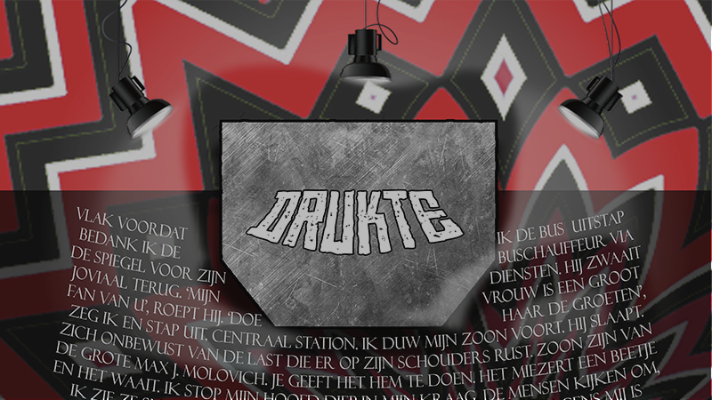
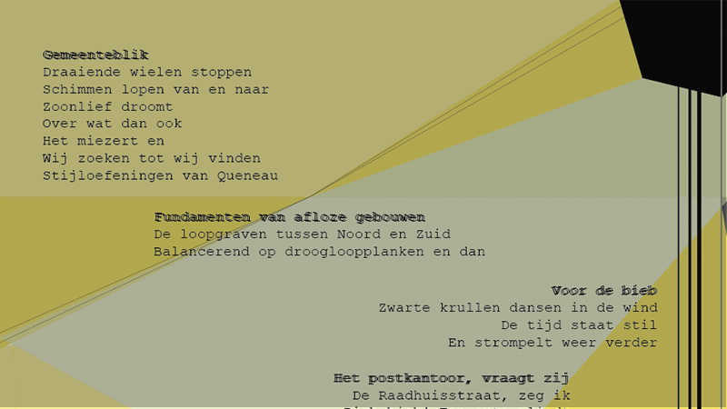
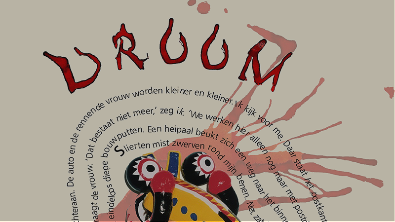

Login
Om favorieten aan je lijst toe te voegen moet je eerst inloggen.
Annuleren LoginLetterlijk
 Lees verder >
Lees verder >
Drukte
 Lees verder >Vrije vers vorm
 Lees verder >Droom
 Lees verder >Presentator die ten onrechte denkt aansluiting te hebben gevonden bij ‘de kids’
 Lees verder >
Lees verder >